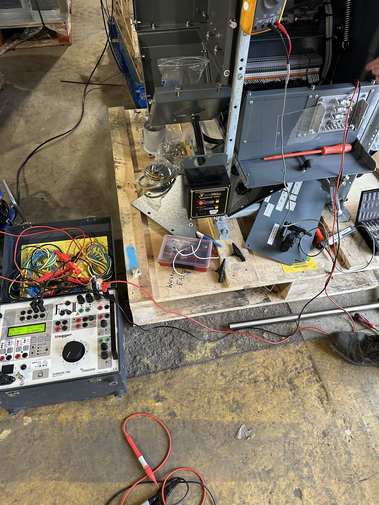

UTILITY ASSET REPLACEMENT
20kV Programme Mobilisation & Delivery
circa £2m
Powertec tendered for and secured a major asset-replacement programme on behalf of a Tier 1 utility contractor. Delivery required mobilisation of HV fitters, cable jointers and logistics support alongside combined Project Manager and SAP accountability.
- Programme mobilisation
- Specialist resourcing
- SAP duties
- Safety leadership
- Commercial control
- Logistics
- Contractor management
- Client interfaces

EUROPEAN CRITICAL INFRASTRUCTURE
Data Centre Testing, Commissioning & Energisation
Current mission-critical experience centres on electrical testing, commissioning, progressive energisation and safe systems of work across a complex live network as part of a specialist SAP team.
- Testing control
- Safety documents
- Isolation & earthing
- Permit-holder monitoring
- Critical-power interfaces
- IST support
- Load testing interfaces
- Operational handover